Laboratori e attività per bambini a Torino e dintorni
Laboratori, corsi e attività per bambini e famiglie a Torino, Cuneo e dintorni: ceramica, cucina, letture, musica e altro.
Cerca tutti i workshop78 attività in programma · aggiornato il 23 ottobre 2026
- ven23ottPer famiglieMerenda spaventosa: decorazioni di Halloweenvenerdì 23 ottobre, 16:00Cit Turin (TO) · 35 €con Scialabà
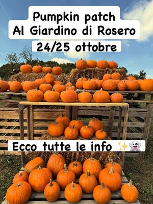
sab24ottPer famigliePumpkin patch: intaglia e dipingi la zuccasabato 24 ottobrePino Torinese (TO)con Il Giardino di Rosero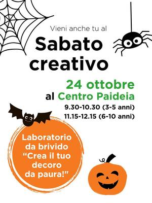
sab24ottPer famiglieCrea il tuo decoro da paura: Halloweensabato 24 ottobre, 09:30–12:15Borgo Po (TO)con Centro Paideia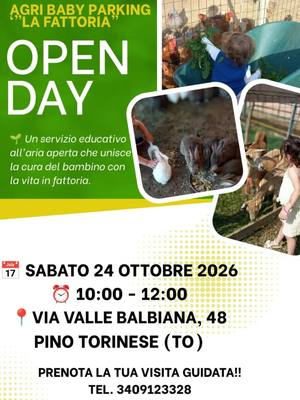
sab24ottPer famiglieOpen day in fattoria: animali per bambinisabato 24 ottobre, 10:00–12:00Pino Torinese (TO)con Agri Baby Parking La Fattoria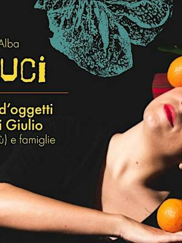
sab24ottPer famiglieVerso Bauci: teatro d’oggettisabato 24 ottobre, 10:00–12:00Alba (CN) · Gratiscon Marta Indra di Giulio per UnTerritorio (FISICO Festival)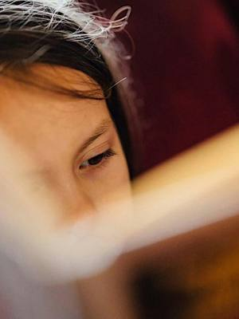
sab24ottPer famiglieStorie in viaggio: letture e laboratoriosabato 24 ottobre, 10:30–12:00Chieri (TO) · Gratiscon Biblioteca Civica di Chieri (Festival dell’Accoglienza)- sab24ottPer famiglieMuseo del Crimine: indagine scientificasabato 24 ottobre, 10:30Settimo Torinese (TO) · Gratiscon MU-CH Museo della Chimica
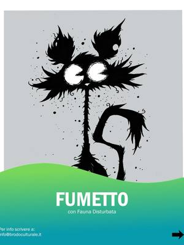
sab24ottPittura e scritturaLaboratorio di fumetto: per grandi e piccolisabato 24 ottobre, 11:00Aurora (TO) · 20 €con Fauna Disturbata e Stefano Frassetto per Brodo Culturale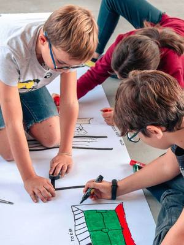
sab24ottPer famiglieParole sottosopra: alfabeti segretisabato 24 ottobre, 11:00–12:00Barriera di Milano (TO) · Gratiscon Print Club Torino per Graphic Days sab24ottPer famiglieMusica e parole: per bimbi da 6 a 14 mesisabato 24 ottobre, 11:15–12:00Cuneo (CN) · Gratiscon Biblioteca 0-18 di Cuneo con Noau Officina Culturale
sab24ottPer famiglieMusica e parole: per bimbi da 6 a 14 mesisabato 24 ottobre, 11:15–12:00Cuneo (CN) · Gratiscon Biblioteca 0-18 di Cuneo con Noau Officina Culturale sab24ottPer famiglieRagazzi in cucina: Halloween partysabato 24 ottobre, 13:30–16:00Lingotto (TO) · 55 €con Eataly Torino Lingotto
sab24ottPer famiglieRagazzi in cucina: Halloween partysabato 24 ottobre, 13:30–16:00Lingotto (TO) · 55 €con Eataly Torino Lingotto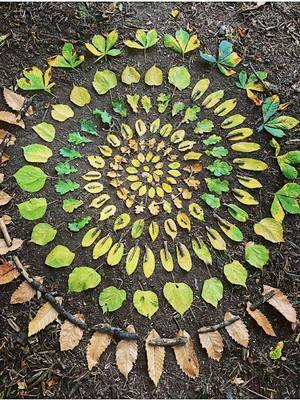
sab24ottPer famiglieMandala naturali: festa d’autunnosabato 24 ottobre, 14:00–16:00Falchera (TO) · Gratiscon Cascina Falchera- sab24ottPer famiglieUn pomeriggio come Picasso: piatto con la facciasabato 24 ottobre, 14:30–16:30Vanchiglietta (TO)con QB Creazioni
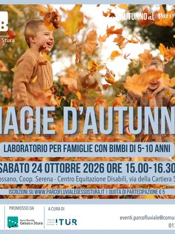
sab24ottPer famiglieMagie d’autunno: foglie in barattolosabato 24 ottobre, 15:00–16:30Fossano (CN) · 5 €con Parco fluviale Gesso e Stura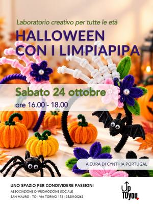
sab24ottAltroHalloween con i limpiapipa: decorazionisabato 24 ottobre, 16:00–18:00San Mauro Torinese (TO)con Cynthia Portugal per upTOyou sab24ottPer famiglieSabati Giocondi: libri, racconti e circosabato 24 ottobre, 16:30–18:00Nizza Millefonti (TO) · Gratiscon Casa del Quartiere Barrito
sab24ottPer famiglieSabati Giocondi: libri, racconti e circosabato 24 ottobre, 16:30–18:00Nizza Millefonti (TO) · Gratiscon Casa del Quartiere Barrito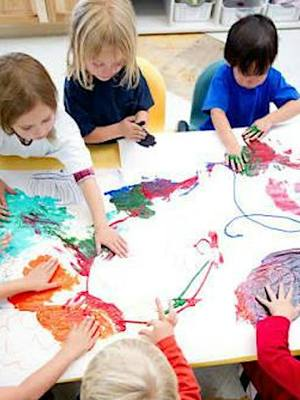
sab24ottPer famiglieDal seme all’albero: arte e letturasabato 24 ottobre, 16:30–17:30Savigliano (CN) · Gratiscon Vanessa Barile per Biblioteca civica di Savigliano- sab24ottPittura e scritturaScriviamo in bella: lezione di calligrafiasabato 24 ottobre, 16:30Quadrilatero (TO) · 5 €con MUSLI, Fondazione Tancredi di Barolo
 dom25ottPer famigliePumpkin patch: intaglia e dipingi la zuccadomenica 25 ottobrePino Torinese (TO)con Il Giardino di Rosero
dom25ottPer famigliePumpkin patch: intaglia e dipingi la zuccadomenica 25 ottobrePino Torinese (TO)con Il Giardino di Rosero dom25ottPer famiglieCucinare in famiglia: speciale Halloweendomenica 25 ottobre, 09:30–11:30Lingotto (TO) · 55 € · esauritocon Eataly Torino Lingotto
dom25ottPer famiglieCucinare in famiglia: speciale Halloweendomenica 25 ottobre, 09:30–11:30Lingotto (TO) · 55 € · esauritocon Eataly Torino Lingotto- dom25ottPer famiglieAuroraCrea: artigiani e laboratori al giardinodomenica 25 ottobre, 10:00–17:00Aurora (TO) · Gratiscon Fondazione di Comunità Porta Palazzo e rete L’Intreccio
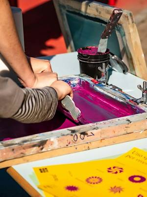
dom25ottPer famiglieManifesti fuori posto: serigrafia kidsdomenica 25 ottobre, 10:00–11:00Barriera di Milano (TO) · Gratiscon Print Club Torino per Graphic Days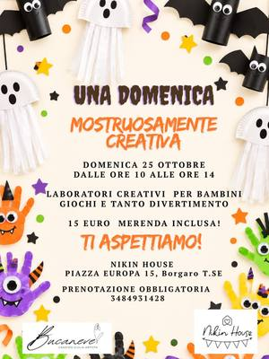
dom25ottPer famiglieDomenica mostruosa: Halloween per bambinidomenica 25 ottobre, 10:00–14:00Borgaro Torinese (TO) · 15 €con Nikin House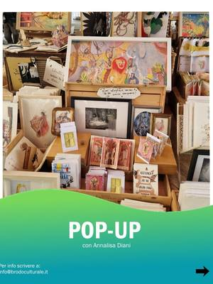
dom25ottPer famigliePop-up spaziale: biglietto tra le stelledomenica 25 ottobre, 11:00Aurora (TO) · 20 €con Annalisa Diani per Brodo Culturale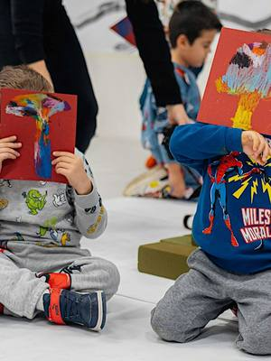
dom25ottPer famiglieLa tribù del disordine: maschere di cartadomenica 25 ottobre, 11:00–12:00Barriera di Milano (TO) · Gratiscon Print Club Torino per Graphic Days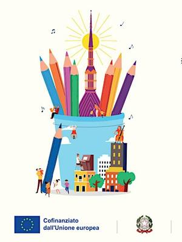
dom25ottPer famiglieOpen singing: si canta in famigliadomenica 25 ottobre, 11:00–12:00Aurora (TO) · Gratiscon Lingotto Musica con Elisa Dal Corso e i Piccoli Cantori di Torino dom25ottPer famiglieCucinare in famiglia: speciale Halloweendomenica 25 ottobre, 13:30–15:30Lingotto (TO) · 55 € · esauritocon Eataly Torino Lingotto
dom25ottPer famiglieCucinare in famiglia: speciale Halloweendomenica 25 ottobre, 13:30–15:30Lingotto (TO) · 55 € · esauritocon Eataly Torino Lingotto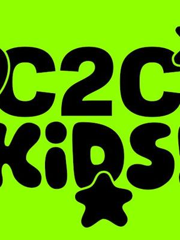
dom25ottPer famigliePiccola orchestra: suoni con i pupazzidomenica 25 ottobre, 15:00–18:00Aurora (TO)con C2C Festival con Trampa e Giulia Querin- dom25ottPer famiglieIl giovane marchese: galateo e minuettodomenica 25 ottobre, 16:00Quadrilatero (TO) · 5 €con MUSLI, Fondazione Tancredi di Barolo
 dom25ottPer famiglieHalloween di carta: origami per bambinidomenica 25 ottobre, 17:00–19:00San Mauro Torinese (TO)con Golnaz Esmaeili per upTOyou
dom25ottPer famiglieHalloween di carta: origami per bambinidomenica 25 ottobre, 17:00–19:00San Mauro Torinese (TO)con Golnaz Esmaeili per upTOyou- dal19ottPer famiglieLalababy: musica per i più piccolida lunedì 19 ottobre a lunedì 9 novembre, ogni lunedì, 16:45–18:30Cuneo (CN)con Cooperativa Il Melograno
 mar27ottPer famiglieTuono: lettura e gioco 7-10 annimartedì 27 ottobre, 17:00–18:00Cuneo (CN) · Gratiscon Biblioteca 0-18 di Cuneo con Noau Officina Culturale
mar27ottPer famiglieTuono: lettura e gioco 7-10 annimartedì 27 ottobre, 17:00–18:00Cuneo (CN) · Gratiscon Biblioteca 0-18 di Cuneo con Noau Officina Culturale dal20ottPer famiglieBarbachef: cucina per bambinida martedì 20 ottobre a martedì 15 dicembre, ogni martedì, 17:30–18:30Cuneo (CN) · 80 € per 8 incontricon Cooperativa Il Melograno
dal20ottPer famiglieBarbachef: cucina per bambinida martedì 20 ottobre a martedì 15 dicembre, ogni martedì, 17:30–18:30Cuneo (CN) · 80 € per 8 incontricon Cooperativa Il Melograno mer28ottPer famiglieLaboratorio di Halloween: lavoretti creativimercoledì 28 ottobreMondovì (CN) · 5 €con Cooperativa Il Melograno
mer28ottPer famiglieLaboratorio di Halloween: lavoretti creativimercoledì 28 ottobreMondovì (CN) · 5 €con Cooperativa Il Melograno gio29ottPer famiglieChi saremo domani: storie per 3-4 annigiovedì 29 ottobre, 17:00–18:00Cuneo (CN) · Gratiscon Biblioteca 0-18 di Cuneo con Noau Officina Culturale
gio29ottPer famiglieChi saremo domani: storie per 3-4 annigiovedì 29 ottobre, 17:00–18:00Cuneo (CN) · Gratiscon Biblioteca 0-18 di Cuneo con Noau Officina Culturale ven30ottPer famiglieLaboratorio di Halloween: lavoretti creativivenerdì 30 ottobreCuneo (CN) · 5 €con Cooperativa Il Melograno
ven30ottPer famiglieLaboratorio di Halloween: lavoretti creativivenerdì 30 ottobreCuneo (CN) · 5 €con Cooperativa Il Melograno sab31ottPer famiglieHalloween all’orto: zucche e mostrisabato 31 ottobreMirafiori (TO)con Orti Generali
sab31ottPer famiglieHalloween all’orto: zucche e mostrisabato 31 ottobreMirafiori (TO)con Orti Generali sab31ottPer famiglieCraft Club and Kids: Halloween creativosabato 31 ottobreTorinocon Pangramma
sab31ottPer famiglieCraft Club and Kids: Halloween creativosabato 31 ottobreTorinocon Pangramma sab31ottPer famiglieCustodi del bosco: Halloween in cascinasabato 31 ottobre, 14:00–16:00Falchera (TO) · Gratiscon Cascina Falchera
sab31ottPer famiglieCustodi del bosco: Halloween in cascinasabato 31 ottobre, 14:00–16:00Falchera (TO) · Gratiscon Cascina Falchera sab31ottPer famiglieLettura creativa: albi illustrati 4–6 annisabato 31 ottobre, 15:00–16:30Santa Rita (TO)con Amalia Cornea per Anima Atelier
sab31ottPer famiglieLettura creativa: albi illustrati 4–6 annisabato 31 ottobre, 15:00–16:30Santa Rita (TO)con Amalia Cornea per Anima Atelier sab31ottPer famiglieAcchiappasogni di Halloween per bambinisabato 31 ottobre, 15:00–17:00Barriera di Milano (TO) · 20 €con Magazzini Tessili
sab31ottPer famiglieAcchiappasogni di Halloween per bambinisabato 31 ottobre, 15:00–17:00Barriera di Milano (TO) · 20 €con Magazzini Tessili sab31ottPer famiglieIl sortilegio della strega: caccia al tesorosabato 31 ottobre, 15:30–17:00Centro (TO) · 15 €con Barburin
sab31ottPer famiglieIl sortilegio della strega: caccia al tesorosabato 31 ottobre, 15:30–17:00Centro (TO) · 15 €con Barburin sab31ottPer famiglieHalloween Cake & Chill: torte per bambinisabato 31 ottobre, 15:30–17:30Borgaro Torinese (TO)con Limaco’s Lab
sab31ottPer famiglieHalloween Cake & Chill: torte per bambinisabato 31 ottobre, 15:30–17:30Borgaro Torinese (TO)con Limaco’s Lab sab31ottPer famiglieRisparmiare è favoloso: per famigliesabato 31 ottobre, 16:00Centro (TO) · 7 €con Museo del Risparmio e MUSLI
sab31ottPer famiglieRisparmiare è favoloso: per famigliesabato 31 ottobre, 16:00Centro (TO) · 7 €con Museo del Risparmio e MUSLI sab31ottPer famiglieSabati Giocondi: cantiere in miniaturasabato 31 ottobre, 16:30–18:00Nizza Millefonti (TO) · Gratiscon Casa del Quartiere Barrito
sab31ottPer famiglieSabati Giocondi: cantiere in miniaturasabato 31 ottobre, 16:30–18:00Nizza Millefonti (TO) · Gratiscon Casa del Quartiere Barrito sab31ottPittura e scritturaHalloween creativo: dipingi la tua t-shirtsabato 31 ottobre, 17:30–20:00Borgo Po (TO) · 60 €con Si Performance Artistiche per TObed
sab31ottPittura e scritturaHalloween creativo: dipingi la tua t-shirtsabato 31 ottobre, 17:30–20:00Borgo Po (TO) · 60 €con Si Performance Artistiche per TObed sab31ottMovimentoIn canoa sul Po: speciale Halloweensabato 31 ottobre, 20:30–22:00Centro (TO) · da 29 € · esauritocon Somewhere Tours con Circolo Amici del Fiume
sab31ottMovimentoIn canoa sul Po: speciale Halloweensabato 31 ottobre, 20:30–22:00Centro (TO) · da 29 € · esauritocon Somewhere Tours con Circolo Amici del Fiume dom1novPer famiglieFacciamo un libro: albo illustratodomenica 1 novembre, 10:00–12:00Grugliasco (TO) · Gratiscon Gloria Tundo per Leumann Hub
dom1novPer famiglieFacciamo un libro: albo illustratodomenica 1 novembre, 10:00–12:00Grugliasco (TO) · Gratiscon Gloria Tundo per Leumann Hub dom1novPer famiglieCarta, pieghe e meraviglia: libri pop-updomenica 1 novembre, 16:30Quadrilatero (TO) · 5 €con MUSLI, Fondazione Tancredi di Barolo
dom1novPer famiglieCarta, pieghe e meraviglia: libri pop-updomenica 1 novembre, 16:30Quadrilatero (TO) · 5 €con MUSLI, Fondazione Tancredi di Barolo dal4novPer famiglieFumettiamo: corso di fumettida mercoledì 4 novembre a mercoledì 9 dicembre, ogni mercoledì, 16:30–18:30Mondovì (CN) · 120 € per 6 incontricon Cooperativa Il Melograno
dal4novPer famiglieFumettiamo: corso di fumettida mercoledì 4 novembre a mercoledì 9 dicembre, ogni mercoledì, 16:30–18:30Mondovì (CN) · 120 € per 6 incontricon Cooperativa Il Melograno gio5novPer famiglieSaldo Junior: il primo circuito elettronicogiovedì 5 novembre, 18:00–20:00Lingotto (TO) · da 10 €con Silvio Navaretti per Fablab Torino
gio5novPer famiglieSaldo Junior: il primo circuito elettronicogiovedì 5 novembre, 18:00–20:00Lingotto (TO) · da 10 €con Silvio Navaretti per Fablab Torino sab7novPer famiglieIl tavolo del naturalista: autunnosabato 7 novembre, 10:00–12:30Aurora (TO) · Gratiscon Spazio MoMag (Fondazione Montessori Italia)
sab7novPer famiglieIl tavolo del naturalista: autunnosabato 7 novembre, 10:00–12:30Aurora (TO) · Gratiscon Spazio MoMag (Fondazione Montessori Italia) sab7novGiochiHackerare Monopoly: la città in giocosabato 7 novembre, 10:30–13:00San Salvario (TO) · Gratiscon Urban Desires 2026 con Collettivo Zeroscena
sab7novGiochiHackerare Monopoly: la città in giocosabato 7 novembre, 10:30–13:00San Salvario (TO) · Gratiscon Urban Desires 2026 con Collettivo Zeroscena dom8novPer famiglieRagazzi in cucina: menu completodomenica 8 novembre, 09:30–12:00Lingotto (TO) · 55 € · esauritocon Eataly Torino Lingotto
dom8novPer famiglieRagazzi in cucina: menu completodomenica 8 novembre, 09:30–12:00Lingotto (TO) · 55 € · esauritocon Eataly Torino Lingotto mer11novPer famiglieHow To Kids: sticker con la vinyl cuttermercoledì 11 novembre, 18:00–19:30Lingotto (TO) · da 7 €con Fablab Torino
mer11novPer famiglieHow To Kids: sticker con la vinyl cuttermercoledì 11 novembre, 18:00–19:30Lingotto (TO) · da 7 €con Fablab Torino dal12novPer famiglieBarbachef: cucina per bambinida giovedì 12 novembre a giovedì 3 dicembre, ogni giovedì, 17:30–18:30Mondovì (CN)con Cooperativa Il Melograno
dal12novPer famiglieBarbachef: cucina per bambinida giovedì 12 novembre a giovedì 3 dicembre, ogni giovedì, 17:30–18:30Mondovì (CN)con Cooperativa Il Melograno dal13novPer famiglieLalababy: musica per i più piccolida venerdì 13 novembre a venerdì 4 dicembre, ogni venerdì, 16:45–17:30Cuneo (CN)con Cooperativa Il Melograno
dal13novPer famiglieLalababy: musica per i più piccolida venerdì 13 novembre a venerdì 4 dicembre, ogni venerdì, 16:45–17:30Cuneo (CN)con Cooperativa Il Melograno sab14novPer famiglieNanù Lab Kids: borsa della spesa dipintasabato 14 novembre, 10:00–11:30Pinerolo (TO) · 20 €con Nanù Lab Kids con 123 Stella
sab14novPer famiglieNanù Lab Kids: borsa della spesa dipintasabato 14 novembre, 10:00–11:30Pinerolo (TO) · 20 €con Nanù Lab Kids con 123 Stella sab14novPer famiglieLaboratorio di San Martino e castagnatasabato 14 novembre, 14:30–16:00Mirafiori (TO) · 16 €con Orti Generali
sab14novPer famiglieLaboratorio di San Martino e castagnatasabato 14 novembre, 14:30–16:00Mirafiori (TO) · 16 €con Orti Generali sab14novPer famiglieBimbi in cucina: cena fai da tesabato 14 novembre, 18:00–20:30Lingotto (TO) · 45 €con Eataly Torino Lingotto
sab14novPer famiglieBimbi in cucina: cena fai da tesabato 14 novembre, 18:00–20:30Lingotto (TO) · 45 €con Eataly Torino Lingotto dom15novMovimentoGita in bici: il Bosco del Merlinodomenica 15 novembre, 09:00–16:00Racconigi (CN) · Gratiscon Parco del Monviso
dom15novMovimentoGita in bici: il Bosco del Merlinodomenica 15 novembre, 09:00–16:00Racconigi (CN) · Gratiscon Parco del Monviso dom15novPer famiglieKids in the Kitchen: cucina in inglesedomenica 15 novembre, 09:30–11:30Lingotto (TO) · 40 €con Eataly Torino Lingotto con Alessia Rossino
dom15novPer famiglieKids in the Kitchen: cucina in inglesedomenica 15 novembre, 09:30–11:30Lingotto (TO) · 40 €con Eataly Torino Lingotto con Alessia Rossino dal17novPer famigliePastrychef: pasticceria per bambinida martedì 17 novembre a martedì 15 dicembre, ogni martedì, 17:30–18:30Cuneo (CN) · 40 € per 4 incontricon Cooperativa Il Melograno
dal17novPer famigliePastrychef: pasticceria per bambinida martedì 17 novembre a martedì 15 dicembre, ogni martedì, 17:30–18:30Cuneo (CN) · 40 € per 4 incontricon Cooperativa Il Melograno sab28novPer famiglieNanù Lab Kids: la porta dell’elfosabato 28 novembre, 10:00–11:30Pinerolo (TO) · 20 €con Nanù Lab Kids con 123 Stella
sab28novPer famiglieNanù Lab Kids: la porta dell’elfosabato 28 novembre, 10:00–11:30Pinerolo (TO) · 20 €con Nanù Lab Kids con 123 Stella dom29novPer famiglieCeramica per bambini: addobbi di Nataledomenica 29 novembre, 14:00–18:30Villar Perosa (TO) · 35 €con Simona di Terraferma Ceramiche per Riflessi di Casa
dom29novPer famiglieCeramica per bambini: addobbi di Nataledomenica 29 novembre, 14:00–18:30Villar Perosa (TO) · 35 €con Simona di Terraferma Ceramiche per Riflessi di Casa dom13dicPer famiglieCucinare in famiglia: biscotti per Rudolphdomenica 13 dicembre, 09:30–11:30Lingotto (TO) · 55 €con Eataly Torino Lingotto
dom13dicPer famiglieCucinare in famiglia: biscotti per Rudolphdomenica 13 dicembre, 09:30–11:30Lingotto (TO) · 55 €con Eataly Torino Lingotto dom13dicPer famiglieRagazzi in cucina: menu completodomenica 13 dicembre, 09:30–12:00Lingotto (TO) · 55 €con Eataly Torino Lingotto
dom13dicPer famiglieRagazzi in cucina: menu completodomenica 13 dicembre, 09:30–12:00Lingotto (TO) · 55 €con Eataly Torino Lingotto dom13dicPer famiglieCucinare in famiglia: biscotti per Rudolphdomenica 13 dicembre, 13:30–15:30Lingotto (TO) · 55 €con Eataly Torino Lingotto
dom13dicPer famiglieCucinare in famiglia: biscotti per Rudolphdomenica 13 dicembre, 13:30–15:30Lingotto (TO) · 55 €con Eataly Torino Lingotto- datada confermareAltroCascina Roccafranca: corsi della stagioneData da confermareMirafiori (TO)con Cascina Roccafranca
 dataa sceltaCucinaLaboratorio di cioccolato a Choco-StoryData a sceltaSan Salvario (TO) · da 39 €con Choco-Story Torino
dataa sceltaCucinaLaboratorio di cioccolato a Choco-StoryData a sceltaSan Salvario (TO) · da 39 €con Choco-Story Torino dataa sceltaPittura e scritturaNovel Academy: corsi di disegno e pitturaData a sceltaTorinocon Novel Academy
dataa sceltaPittura e scritturaNovel Academy: corsi di disegno e pitturaData a sceltaTorinocon Novel Academy- dataa sceltaMovimentoProgetto SLIP: corsi di circo e aereaData a sceltaBarriera di Milano (TO) · da 190 € all’annocon Progetto SLIP
- dataa sceltaMusica e teatroSPLIT Teatro: recitazione, musical e cantoData a sceltaMirafiori (TO)con SPLIT Teatro
- dataa sceltaMovimentoStudio21: corsi di street danceData a sceltaLingotto (TO)con Studio21 Street Dance School
 dataa sceltaPer famiglieVillaggio della Zucca: dipingi la tua zuccaData a sceltaFavria (TO) · 15 €con Il Villaggio della Zucca
dataa sceltaPer famiglieVillaggio della Zucca: dipingi la tua zuccaData a sceltaFavria (TO) · 15 €con Il Villaggio della Zucca dataa sceltaPer famiglieLaboratorio per bambini: argilla e scultureOgni lunedì, mercoledì e venerdì, 15:00San Salvario (TO) · da 25 € a lezionecon Pottery Lab
dataa sceltaPer famiglieLaboratorio per bambini: argilla e scultureOgni lunedì, mercoledì e venerdì, 15:00San Salvario (TO) · da 25 € a lezionecon Pottery Lab ognigioPer famiglieFili di Fantasia: uncinetto per ragazziOgni giovedì, 17:00–18:00San Mauro Torinese (TO)con Sara Bertino Barbon per upTOyou
ognigioPer famiglieFili di Fantasia: uncinetto per ragazziOgni giovedì, 17:00–18:00San Mauro Torinese (TO)con Sara Bertino Barbon per upTOyou ognilunPer famiglieCorso di ceramica bimbi: modellare l’argillaOgni lunedì, 17:15–18:15San Donato (TO)con Chu Lab
ognilunPer famiglieCorso di ceramica bimbi: modellare l’argillaOgni lunedì, 17:15–18:15San Donato (TO)con Chu Lab